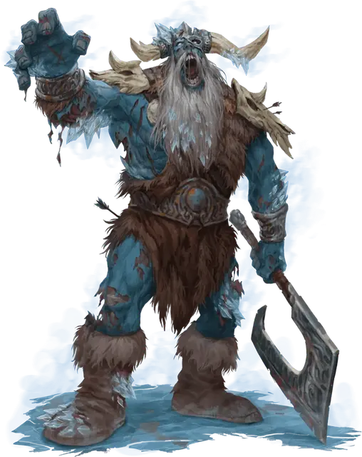

Ледяной великан — зомби
Frost Giant Zombie
Огромный Великан, нейтрально-злой

Класс Доспеха 15 (разнотканый доспех)
Хиты 138 (12к12 + 60)
Скорость 40 футов
| мод | спас | ||
|---|---|---|---|
| СИЛ | 23 | +6 | +6 |
| ЛОВ | 6 | −2 | −2 |
| ТЕЛ | 21 | +5 | +5 |
| мод | спас | ||
|---|---|---|---|
| ИНТ | 3 | −4 | −4 |
| МДР | 6 | −2 | +2 |
| ХАР | 5 | −3 | −3 |
Иммунитет к урону холод, яд
Иммунитет к состояниям отравление
Чувства тёмное зрение 60 футов, пассивное Восприятие 8
Языки Понимает Великаний, но не говорит
Опасность 9 (5000 опыта)
Бонус мастерства +4
Особенности
Стойкость нежити. Если великан получает урон, уменьшающий хиты до 0, он совершает спасбросок Телосложения Сл 5 + полученный урон, если только это не был урон излучением или урон от критического попадания. При успехе хиты великана опускаются всего лишь до 1.
Аура оцепенения. Любое существо, которое начинает свой ход в пределах 10 футов от великана, должно совершить спасбросок Телосложения Сл 17. При провале, существо не может совершить более одной атаки или использовать бонусное действие в этом ходу.
Действия
Мультиатака. Великан совершает две атаки оружием.
Секира. . Рукопашная атака оружием: +10 к попаданию, досягаемость 10 футов, одна цель. Попадание: 25 (3к12 + 6) рубящего урона.
Метание камня. Дальнобойная атака оружием: +10 к попаданию, дистанция 60/240 футов, одна цель. Попадание: 28 (4к10 + 6) дробящего урона.
Замораживающий взгляд. Великан выбирает одно существо, которое он может видеть в пределах 60 футов. Цель должна преуспеть в спасброске Телосложения Сл 17, иначе получит 35 (10к6) урона холодом и станет парализованной до конца своего следующего хода.
Описание
Неизвестный эорианский предмет огромной силы и тайны был обнаружен и доставлен в Крепость Мертвого ярла в Айзелкроссе, чтобы доставить удовольствие правящей ледяной великанше Конессе Берг. Нестабильная природа объекта высвободила взрыв разъедающей мистической силы, опустошая обитателей крепости искажающей энергией некромантии, превращая их в монструозную, пропитанную инеем нежить. Эти неуклюжие монстры теперь бродят по разрушенному ландшафту, окружающему их проклятый дом, охотясь и уничтожая все живое с ужасающей свирепостью.
Изуродованные, убитые и замороженные останки потенциальных героев усеивают места сражений, где встречались эти неживые великаны. Недооценивать этих монструозных кошмаров было глупостью многочисленных экспедиций в северные районы Айзелкросса, и только слухи часто возвращались обратно в качестве доказательства того, что эти хладные монстры вообще существуют.
Сердца во льду. В ледяных сердцах великанов, пылающих и неугасимых, стихийная энергия разжигает непревзойденную ярость, которая толкает ледяных великанов зомби за пределы скорости ходьбы обычных зомби, делая этих чудищ намного быстрее, чем мог бы подумать исследователь гниющего великана.
Аура оцепенения. Помимо превращения ничего не подозревающих ледяных великанов в бессмертных ужасов, эорианский артефакт также придал и усилил стихийную природу блуждающей армии, так что неживые великаны излучают смертоносную ауру замедляющего холода, заманивая свою жертву в ледяной туман, который уменьшает их шансы на побег.
Нежить. Ледяной великан зомби не нуждается в воздухе, еде, питье или сне.